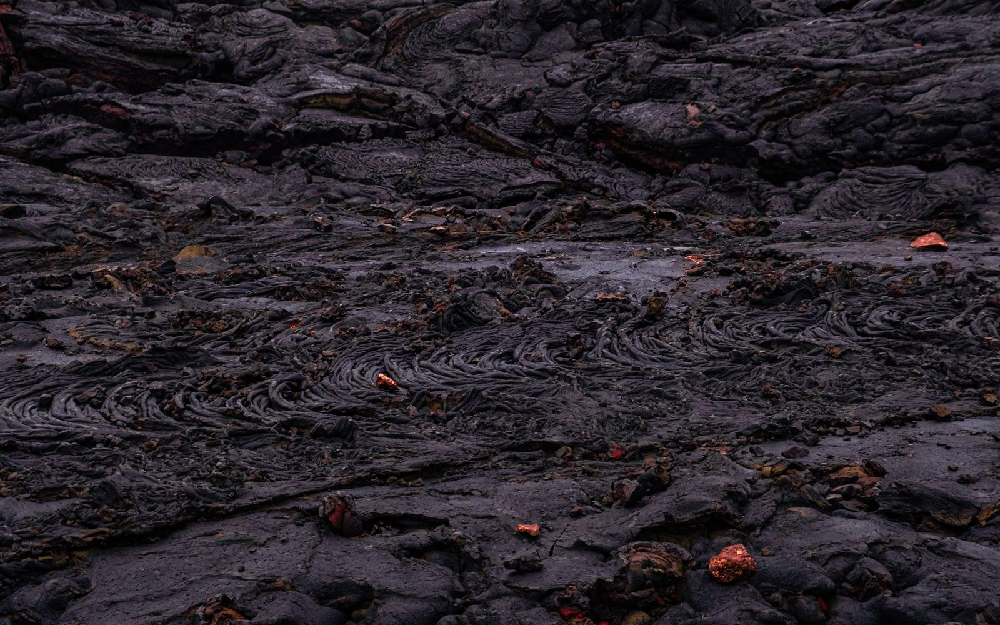

The Scientist · Entry 04
Dr Ruth Calloway
Tectonic seismologist. Fourteen years of putting instruments in the ground, keeping them honest, and reading what they write down.
The short version
I came to seismology through fieldwork, not theory: a summer studentship maintaining a university network, most of it spent driving between stations with a spanner, a battery tester and a notebook. The notebook is the part I kept. A network is a promise that someone is paying attention, and attention, in this trade, is a maintenance schedule.
The doctorate was in tectonics — how fault systems load, creep and occasionally fail — and it was done half at a desk and half on a deployment in mountainous country where the stations froze, flooded and were once, memorably, excavated by an animal with opinions. Observatory work followed: duty seismologist shifts, catalogue production, the unglamorous discipline of picking phases at 3 a.m. and defending the picks at 9.
Faultline is the independent form of the same work. One seismologist, a bench of instruments, field and analysis associates hired per study, and a log that gets written whether the news is good or not. The practice takes two study slots per field season, plus the standing on-call commitment for post-event deployments — a limit set by the maintenance schedule, not by marketing.
My opinion, since a log should have one: most seismic catalogues in the world are better than their reputations and worse than their error bars, and the difference is almost always bookkeeping. Fix the bookkeeping and the earth becomes considerably more legible.

- 2008–12PhD, Geophysics (tectonics) — university research school
- 2012–16Observatory seismologist — duty shifts, catalogue production
- 2016–20Senior seismologist — network operations & hazard inputs
- 2020–Faultline Seismology — independent practice
- StandingProfessional member, geoscience institute; full field & working-at-height certification
“A magnitude without its scale named is a rumour.” — THE HOUSE RULE, PRINTED IN EVERY REPORT THIS PRACTICE ISSUES
Working Method · Entry 05
How a study runs
The same four movements, whatever the study: site, time, catalogue, report. Each one is where a different kind of error likes to hide.
- 01
Site before concrete
Every station starts as a noise survey: a temporary instrument records the candidate site for days before anything is installed. A station beside a road records the road; beside a pump, the pump. The earth is quiet in most places — the job is finding those places and proving it with data, not with optimism.
- 02
Timing is the catalogue
Locations are arithmetic on arrival times, so clocks are GPS-disciplined and their drift is logged like data — because it is data. A catalogue is only ever as good as its timing, and a study that cannot show its clock history cannot show its locations either.
- 03
Catalogue practice, in the open
Phases are picked, events located, magnitudes computed with the scale named on every line. Conversions use published relations, stated in the methods note. Completeness — the magnitude above which the network misses nothing — is estimated and printed, because a catalogue that hides its blind spots manufactures quiet periods that never happened.
- 04
The report names its limits
Every study ends in a written report and a methods note that travel with the data. What the geometry could not resolve is listed as plainly as what it could. If the honest answer is smaller than the hoped-for one, the report says the smaller one.
The Honesty Page · Entry 06
Three things this practice will not do
Printed here so that no client has to discover them mid-engagement.
✕No prediction
Earthquakes cannot be predicted — no method, instrument or practitioner can state the time, place and magnitude of a future event, and decades of serious attempts have not changed that. Anyone who offers a prediction is outside the science. This practice measures the past and present, and models the future only as probability.
✕No silent scale-mixing
Magnitude scales measure different things: ML reads local amplitude, mb reads body waves, Mw reads the fault's actual moment. Numbers from different scales are not interchangeable, and a catalogue that mixes them without conversion manufactures trends. Every magnitude from this practice carries its scale, and every conversion carries its reference.
✕No prophecy dressed as hazard
Hazard is a probability over a stated window — “a stated chance of stated shaking in fifty years” — built from catalogues and models with stated uncertainties. It is not a date, not a warning and not a promise. Reports from this practice give the window, the probability and the uncertainty together, or they do not give the number at all.
Engagement terms, briefly: studies are scoped in writing before work begins, priced from the printed fee shape on the record page; data and methods notes are delivered together and remain usable by the client without further licence; confidential client details are never published — field notes appear as composites, as on this site. Engineering sign-off is not offered at any price.